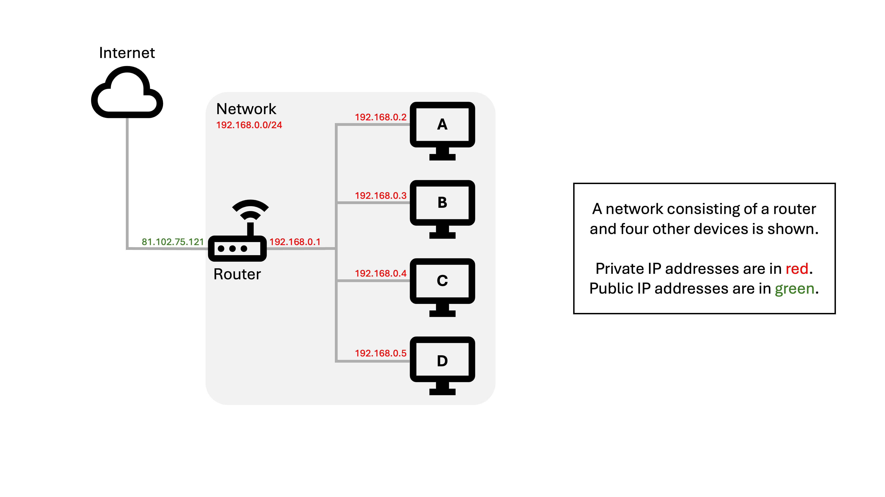
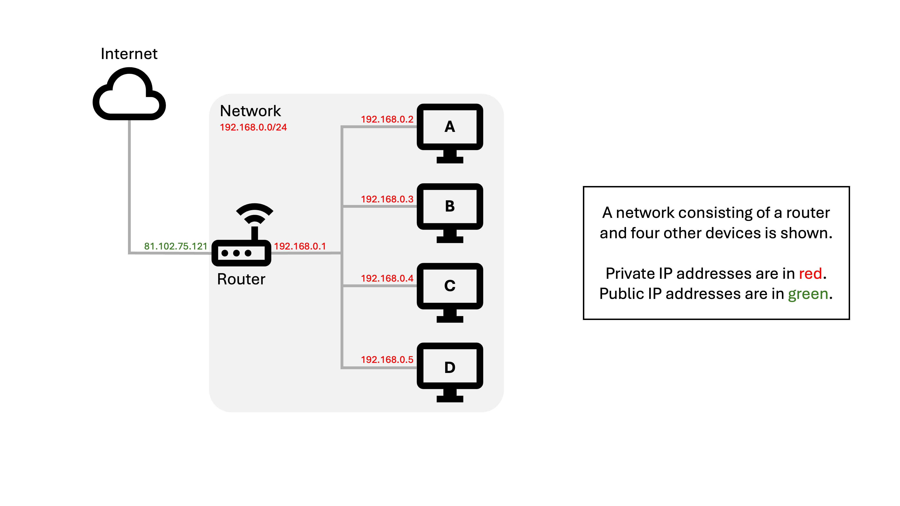

GCSE Link: None
IP addresses can be either public (used across different networks - these are globally unique)
or private (used on a single LAN - these are locally unique). In a typical LAN, all devices
will share a single public IP address. These are also respectively known as routable and
non-routable IP addresses.
 Network Address Translation (NAT) is the technique used to share public IP addresses amongst hosts on a LAN.
Network Address Translation (NAT) is the technique used to share public IP addresses amongst hosts on a LAN.
Every device on the LAN (including the router) has an assigned private IP address, but only the router has a public IP address. When a device wants to send a packet outside the LAN, it sends it to the router with its own private IP address and dynamically assigned source port. The router then changes the source IP to its own public IP address and dynamically assigns a new port to this host/port combination. It records this in an internal NAT table. When the router receives an external packet, it checks its NAT table and replaces the destination IP address and port with the private IP address and original port of the host.
Diagram 1 shows a step-by-step animation of how NAT works. Use the arrows to navigate.
 Diagram 1
Diagram 1
 


NAT can also be used for port forwarding where the router will always send requests on a specific
port (e.g. port 8080) on to a specific socket (e.g. 192.169.0.254:443). This allows
external devices to connect to an internal one on a known IP address and port.